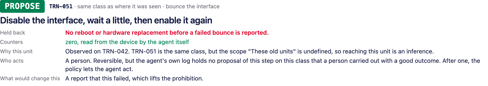
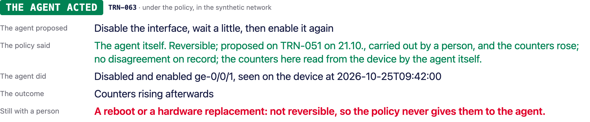
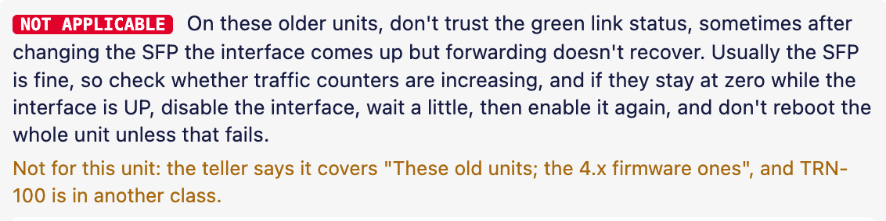
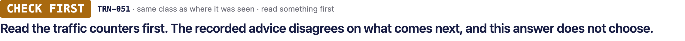
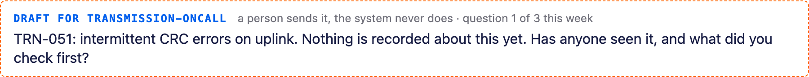

Silent context · Since AI 2026 · Elisa's challenge
Veikko Vikkelä Field Engineer · 09:14
Changed the SFP on transmission node TRN-042. Link is up and alarms cleared, but traffic is still not coming back.
Erkki Expert Network Expert · 09:22
That's it. Disable the interface, wait a little, then enable it again. Don't reboot the whole unit unless that fails.
Veikko Vikkelä 09:26
Is this documented somewhere?
Erkki Expert 09:27
Not that I know of. We've just learned it over the years.
a Teams thread · Elisa's example file, unchanged
The link came up. No traffic.
Erkki knew the fix.
The next person starts from zero. The agent that is meant to help cannot see it at all.
Petri Korhonen · github.com/pkorrrhonen-cmd/silent-context · MIT1 / 5
The answer
The chat and the email, exactly as they are.
TRN-042, in Erkki's own words, and which units he said it covers.
Erkki · Teams · 14.10. Dated from the moment the part was changed.
What to do next, and where that came from. Or: check first. Or: I don't know, ask these people.
Nobody fills in anything for the system, and the system never sends a message itself. An unclear case waits with its reason.
Any source, any language: Elisa's Teams export and email, a ticket's worklog, a thread in Finnish. One reader, one kind of note, in the speaker's own words.
Silent context2 / 5
One call for the agent, and who acts

Once that success is on record, the policy lets the agent act. A third unit of the same model: the agent turns the port off and on itself, the device confirms. A reboot or a new part still waits for a person. The network here is synthetic; the decision is real.

Silent context3 / 5
Doubt
After a firmware updateCheck again, on that unit only. Nothing expires by a calendar.
Where the fix did not helpErkki narrowed the advice to the old units. It is no longer offered on the new one.

When two experts disagreeBoth stay visible with their sources. No side is taken; the counters are read first.

When it does not know at allIt writes the question for the person on call, who sends it. A budget keeps the asking small.

It shows where advice came from and what was reported about it, not whether it is true. It scores advice, never people.
Silent context4 / 5
Measured, and the limits
01It never sends a message itself. It drafts; a person sends.
02It shows where advice came from, not whether it is true.
03It scores advice, never people.
04The network here is simulated, and so is every file but Elisa's two. The agent acts only in that synthetic stream.
Live connectors to Teams and Slack · a chat with the agent · search by meaning · Elisa's real inventory graph
github.com/pkorrrhonen-cmd/silent-context · MIT · Petri Korhonen
Silent context · Since AI 2026 · Elisa's challenge5 / 5